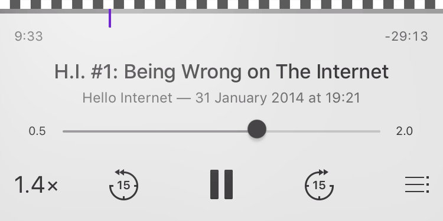
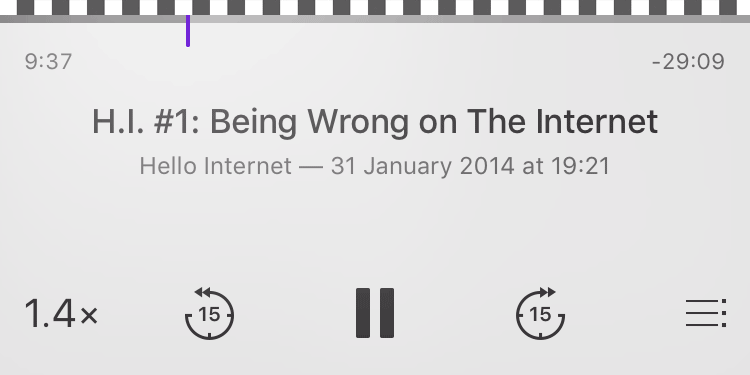
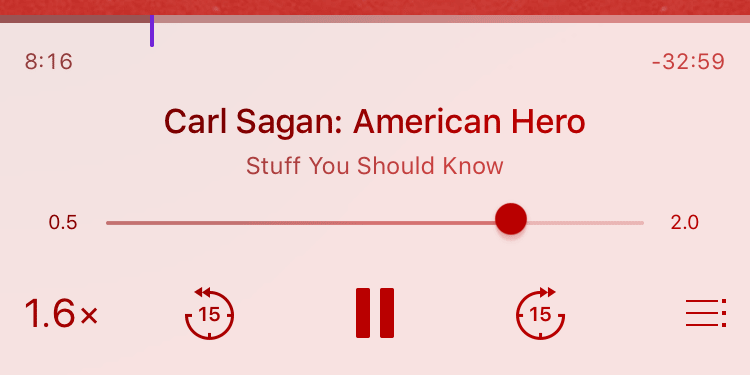

PodcastFineTuning
Fine tune your podcast speed

PodcastFineTuning removes the limitations of Apple's podcast app. With only four available choices, Apple didn't make it easy to find a playback rate that suits everybodies needs. But now you can fine tune the rate between the default steps.
How it works
Use the regular playback rate button to toggle a slider that lets you fine tune the rate. The slider will of course, like the other controls, adapt its color to look great for every podcast.

Slider visible

Slider hidden
